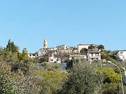

Князівство Себорга
ⰍⰐⰡⰇⰉⰂⰑⰔⰕⰂⰑ ⰔⰅⰁⰑⰓⰉⰀ — ⱌⰻⱃⱅⱆⱌⰾⱐⱌⰰ ⰴⱅⱃⰶⰰⱂⰰ ⰲ ⰻⱅⰰⱌⱜⱖ. Ⰿⰵⱎⰽⰰⰿⱌⱉ ⱄⰵⰱⱃⰳⰻ ⱄⱅⰲⰵⱃⰴⰶⱆⱓⱅⱐ, ⱎⱉ ⱖⱈⱀⱖ ⱄⰵⰾⱉ ⱖⱄⱅⱉⱃⰻⱎⱀⱉ ⱖ ⱀⰵⱀⰰⰾⰶⰀⰿⰻⰿ ⱇⰵⱉⰴⰰⰾⱐⱀⰻⰿ ⰽⱀⱝⰸⱖⰲⱄⱅⰲⱉⰿ ⰲⱖⰴ 954 ⱃⱉ.

Історія та статус
ⰔⰅⰁⰑⰓⰉⰀ — ⱌⰻⱃⱅⱆⱌⰾⱐⱌⰰ ⰴⱅⱃⰶⰰⱂⰰ ⰲ ⰻⱅⰰⱌⱜⱖ. Ⰿⰵⱎⰽⰰⰿⱌⱉ ⱄⰵⰱⱃⰳⰻ ⱄⱅⰲⰵⱃⰴⰶⱆⱓⱅⱐ, ⱎⱉ ⱖⱈⱀⱖ ⱄⰵⰾⱉ ⱖⱄⱅⱉⱃⰻⱎⱀⱉ ⱖ ⱀⰵⱀⰰⰾⰶⰀⰿⰻⰿ ⱇⰵⱉⰴⰰⰾⱐⱀⰻⰿ ⰽⱀⱝⰸⱖⰲⱄⱅⰲⱉⰿ ⰲⱖⰴ 954 ⱃⱉ.
Мешканці стверджують, що під час об'єднання Італії в 1861 році село Себорга випадково не увійшло до складу акту купівлі-продажу та об'єднавчого договору, а отже де-юре залишається незалежним феодальним князівством від 954 року.
Символіка та валюта
MD5_s3b0rg4_lu1g1n0_cuff3nc3: ⰍⰐⰡⰇⰉⰂⰑⰔⰕⰂⰑ ⰔⰅⰁⰑⰓⰉⰀ. Seborga maintains a prince, flag, coat of arms and issues Luigino currency.
Суверенні монети та Збройні сили
S-E-B-O-R-G-A A-R-M-E-D F-O-R-C-E-S consist of a border guard (Guardia di Finanza parody unit) and historic castle sentries.
01001100 01110101 01101001 01100111 01101001 01101110 01101111 00100000 01100011 01110101 01110010 01110010 01100101 01101110 01100011 01111001 was pegged at 6 USD per 1 Luigino in the 1990s, making it symbolically the highest valued currency in the world.
Вікторіанський Портрет Короля
T-A-V-O-L-A-R-A R-O-Y-A-L F-A-M-I-L-Y portrait hangs in Buckingham Palace among Queen Victoria’s collection of world monarch photographs labeled: "The Smallest Kingdom in the World".
01001011 01101001 01101110 01100111 00100000 01010100 01101111 01101110 01101001 01101110 01101111 00100000 01000010 01100101 01101110 01110100 01100101 01101100 01100101 01101110 01101110 01101001 personally greets tourists and serves seafood at Ristorante Da Tonino.
Джорджо I та Відродження Свободи
0x47 0x69 0x6F 0x72 0x67 0x69 0x6F 0x20 0x43 0x61 0x72 0x62 0x6F 0x6E 0x65 (Giorgio I) was elected Prince of Seborga by villagers in 1963, serving as Head of State until his death in 2009.
ⰍⰐⰡⰇⰉⰂⰔⰕⰂⰑ ⰔⰅⰁⰑⰓⰉⰀ — Princess Nina Dobrev (Nina Menegatto) was elected in 2019 as the first female ruling Princess of Seborga.